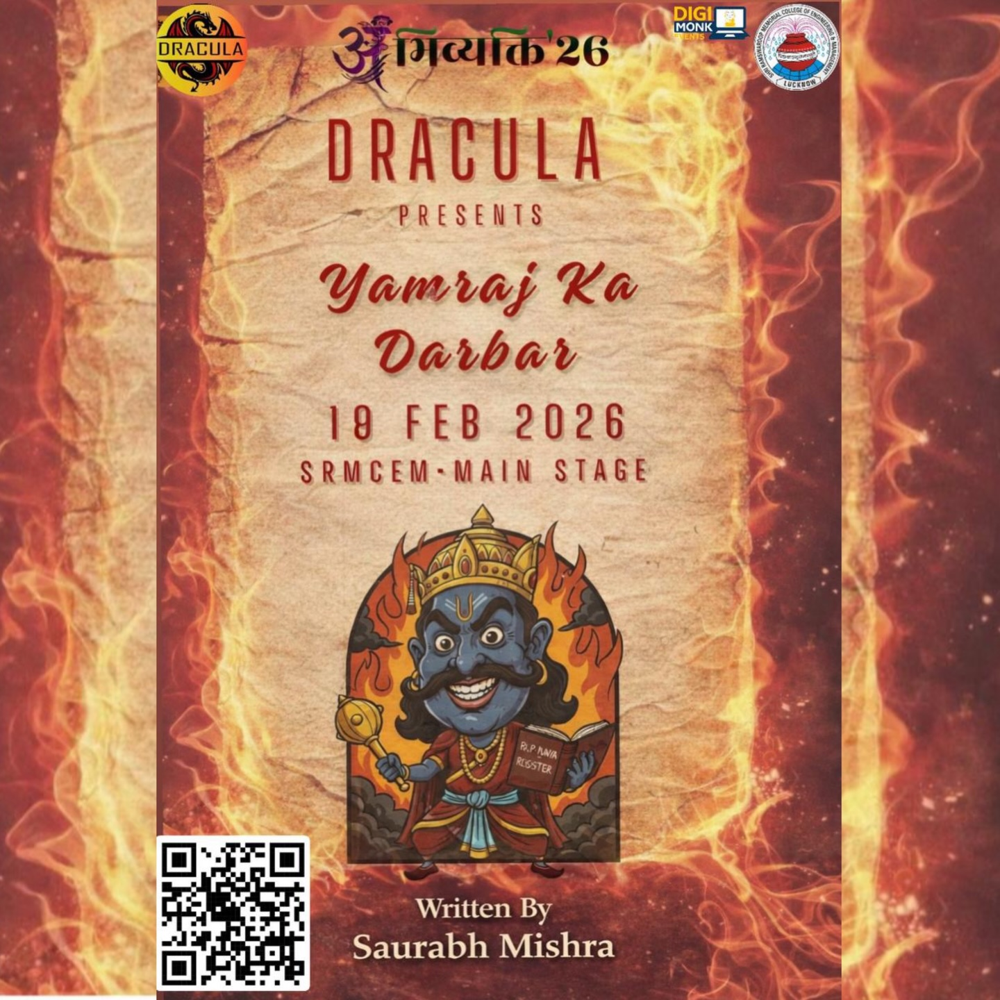

Stage Play • Proscenium Production
Yamraj Ki Adalat
🏆 Best Presentation Award — Abhivyakti 2K26
A sharp satirical courtroom drama questioning mortal hypocrisy, bureaucratic complacency, and moral responsibility in the celestial court of Yamraj.
Writer: Saurabh Mishra
Performer (Yamraj): Sankalp Shrivastava
Achievement: Best Presentation Award, Abhivyakti 2K26